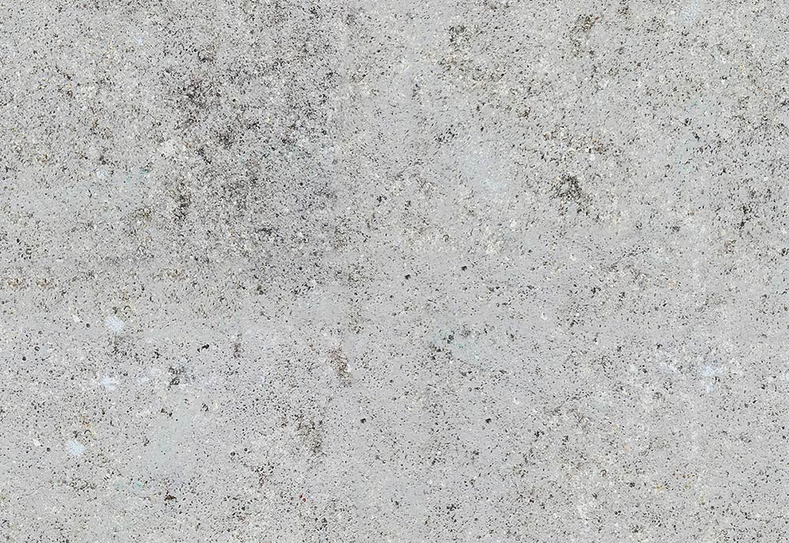
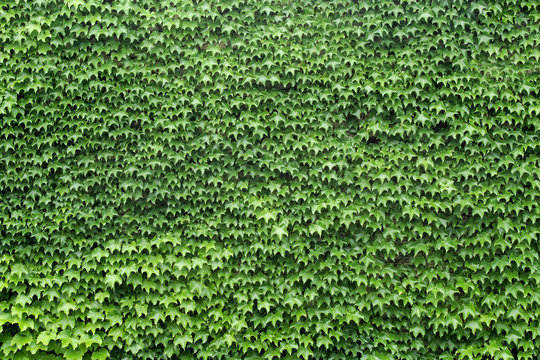

HTML
<!DOCTYPE html>
<html>
  <head>
    <title>Underpass Museum AR</title>
    <script src="https://aframe.io/releases/1.6.0/aframe.min.js"></script>
    <script src="https://unpkg.com/aframe-alpha-test-component@0.1.0/dist/aframe-alpha-test-component.min.js"></script>
  </head>
  <body>
    <a-scene webxr="optionalFeatures: hit-test;" renderer="colorManagement: true; sortObjects: true;">
      
      <a-assets>
        <a-asset-item id="artifact" src="statue.glb"></a-asset-item>
        
        
        
        
      </a-assets>

      <a-light type="ambient" color="#222" intensity="0.5"></a-light>
      
      <a-light type="spot" 
               color="#aaccff" 
               intensity="2" 
               position="0 8 -4" 
               rotation="-90 0 0"
               angle="30"
               penumbra="0.5"
               animation="property: intensity; from: 0.1; to: 2; dur: 12000; dir: alternate; loop: true; easing: easeInOutSine">
      </a-light>

      <a-plane position="0 0 0" rotation="-90 0 0" width="50" height="50" src="#concreteTex" repeat="10 10" roughness="1"></a-plane>
      
      <a-box position="0 5 -12" width="40" height="10" depth="2" src="#concreteTex" repeat="4 2"></a-box>
      
      <a-box position="-5 10 -4" width="2" height="1" depth="20" src="#concreteTex" repeat="1 10"></a-box>
      <a-box position="5 10 -4" width="2" height="1" depth="20" src="#concreteTex" repeat="1 10"></a-box>
      
      <a-box position="-5 7.5 -4" width="2" height="5" depth="0.1" material="src: #vinesTex; transparent: true; alphaTest: 0.5" repeat="1 1"></a-box>
      <a-box position="5 7.5 -6" width="2" height="5" depth="0.1" material="src: #vinesTex; transparent: true; alphaTest: 0.5" repeat="1 1"></a-box>
      <a-box position="0 7.5 -11.9" width="40" height="5" depth="0.1" material="src: #vinesTex; transparent: true; alphaTest: 0.5" repeat="5 1"></a-box>

      <a-entity position="0 0 -4">
        <a-box position="0 0.5 0" width="1.2" height="1" depth="1.2" src="#concreteTex" repeat="1 1" roughness="1"></a-box>
        
        <a-entity gltf-model="#artifact" 
                  position="0 1 0" 
                  scale="1 1 1"
                  animation="property: rotation; to: 0 360 0; loop: true; dur: 20000">
        </a-entity>
      </a-entity>

      <a-entity camera look-controls wasd-controls position="0 1.6 0">
        <a-cursor color="white"></a-cursor>
      </a-entity>

    </a-scene>
  </body>
</html>
